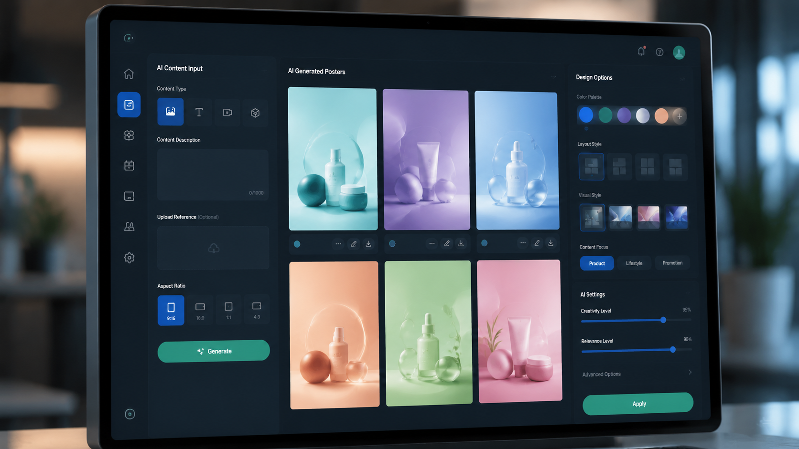
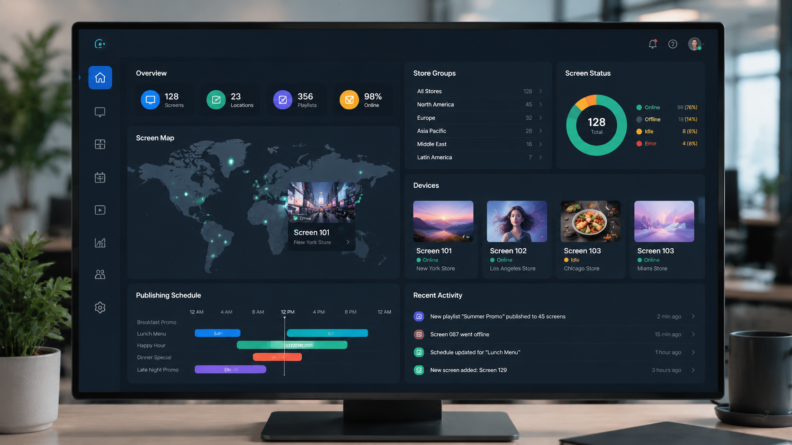
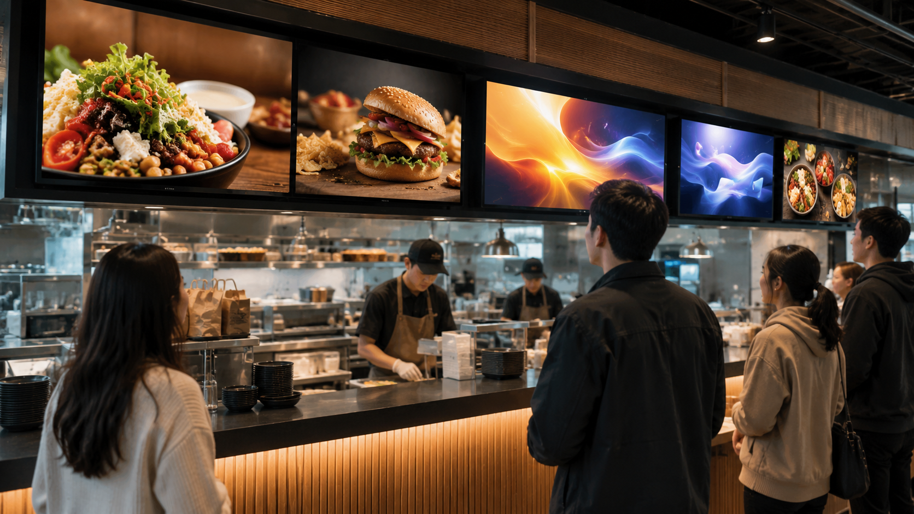

輸入資料
輸入文字、上傳產品圖片、菜單相片、影片素材或活動資訊。
Workflow
Unico 將商戶日常內容更新流程拆成五個清晰步驟，減少設計、剪輯、上傳與現場管理成本。
輸入文字、上傳產品圖片、菜單相片、影片素材或活動資訊。
系統識別行業、優惠、價格、時間、展示目的與屏幕比例。
自動生成海報、短片廣告、屏幕版面與行動呼籲。
在手機、平板或電腦上檢查效果，快速調整樣式與內容。
選擇門店、屏幕與播放時間，一鍵推送並同步更新。
AI Poster Generation
餐牌、套餐、課程、房源、美容套票與新品活動，都可以由 AI 生成適合屏幕展示的版面。系統會根據行業場景選擇模板，避免通用 AI 內容不貼近實際銷售語境。


Cloud Publishing
管理者可以遠程發佈內容、安排播放排程、分組管理設備、同步多間門店，並查看終端狀態。對連鎖品牌與多屏場景尤其有價值。
Modules
生成海報、餐牌、優惠、課程廣告、產品介紹與門店公告。
根據文字、圖片和產品資料生成適合智慧屏幕播放的動態內容。
覆蓋餐飲、教育、地產、美容、零售與服務業常見展示需求。
根據 UA32、UA55 和不同橫豎屏比例自動匹配畫面結構。
管理屏幕名稱、分組、狀態、播放任務、音量和定時開關。
支持總部統一發佈，也支持不同分店使用不同內容排程。
For Local Business
